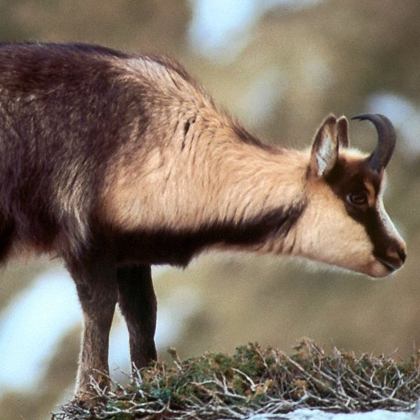

African Lion
Panthers Leo
Population info: Estimates of the African lion population range between 16,500 and 47,000 living in the wild.
Agile Gibbon
Hylobates Agilis
The agile gibbon is found on Sumatra southeast of Lake Toba and the Singkil River, in a small area on the Malay Peninsula, and south Thailand near the Malaysian border.

Apennine Chamois
Rupicapra ornata
The Apennine chamois was said to have been hunted close to extinction until the Abruzzi National Park intervened with a reintroduction program, which led to the return of the chamois in the mountains of Italy.